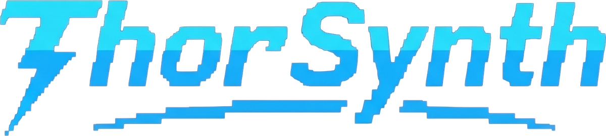
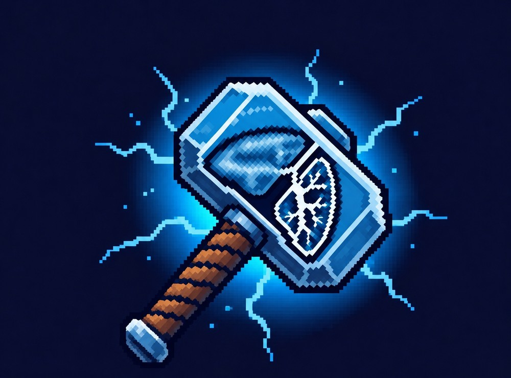

Track 1
Br40
Mediastinal kernel
Soft tissue, great vessels, thymus and mediastinal fat, where small HU differences carry the clinical signal.

Synthetic thoracic CT from 3T Dixon MRI
Turn a radiation-free thoracic MRI into a calibrated CT in Hounsfield Units, benchmarked against photon-counting CT. Two tracks, one for each reconstruction kernel.

Teams enter one or both tracks. Each track has its own leaderboard and its own ranking.
Soft tissue, great vessels, thymus and mediastinal fat, where small HU differences carry the clinical signal.
Lung parenchyma, airways and bone, with the sharp, high-frequency texture of a lung reconstruction.
The challenge runs from December to February. Results will be presented at ISBI 2027.
Four levels from sign-up to Lausanne. Each one links to where it happens.
Create a Codabench account and request to join ThorSynth. Requests are approved by the organizers.
Codabench page ›Request access to the dataset on Zenodo and attach the Data Use Agreement signed by the team leader. Approval unlocks the download.
How to get access ›Upload synthetic CTs for the validation MRIs and get global and ROI metrics on the leaderboard.
Submission format ›Submit the test set within the final window. Top teams present at ISBI and co-author the challenge paper.
Rules & awards ›This site explains the challenge. Accounts, uploads and scores live on Codabench; images live on Zenodo.
Task, data description, metrics, timeline, rules and FAQ.
Challenge & data ›Team registration, submissions, the validation leaderboard and the forum.
Open Codabench ›The dataset, released on request once your signed Data Use Agreement is approved.
Zenodo record ›Pre-processing and helper scripts for working with the data.
Repository ›Chest CT carries opportunistic biomarkers (thymus, body composition, bone density) that depend on calibrated Hounsfield Units, which MRI cannot provide. ThorSynth benchmarks MRI-to-CT synthesis against photon-counting CT, so patients scanned with MRI can benefit too.
Read the motivation ›S-RACE San Raffaele AI Centre, Vita-Salute San Raffaele University, and the Department of Advanced Imaging for Personalized Medicine, IRCCS San Raffaele Hospital, Milan, Italy.